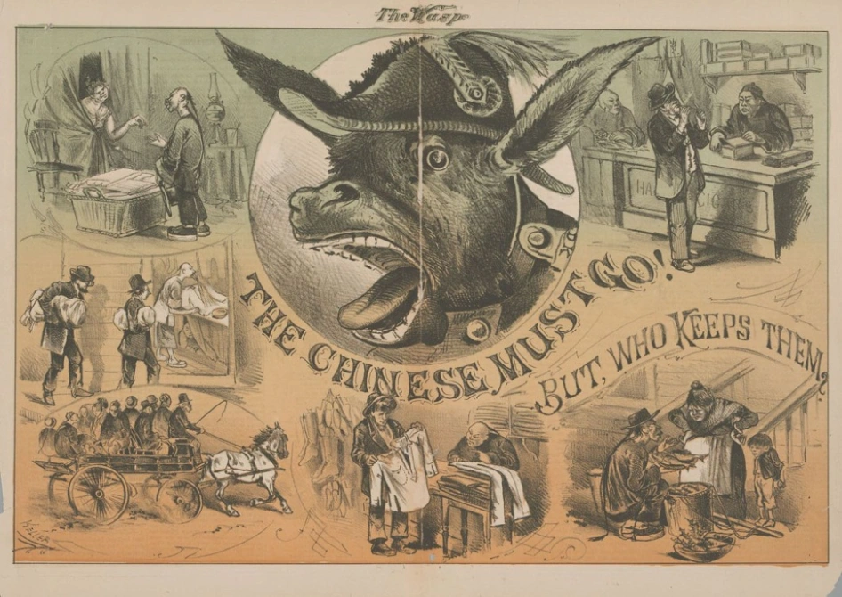

Conclusion

The Chinese Exclusion Act was a significant moment in U.S. history. As the first race-based immigration restriction, it significantly influenced future immigration policies within the United States. To justify this restriction of rights, the Chinese were painted as the villain, framed as the scapegoat for many problems in American society. Barred from freely entering the "Land of Opportunity," the Chinese were wrongly discriminated against, and the government failed to uphold its responsibilities of ensuring the protection of their civil rights. This stands in stark contrast to the common characterization of America as the "Land of the Free." The racism and prejudice created by the law continue to linger today. The Chinese Exclusion Act serves as a painful reminder of the failure of the government and its oppression and marginalization of the Chinese.